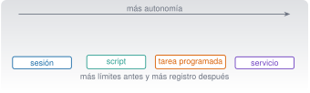

Automatización, agentes y entornos avanzados
C8 · Vía C
Versión 0.2.0 · editada el 23/10/2026 · comprobada el 23/10/2026 · Claude Code 2.1.309 (doc.) · pendiente de revisión

Objetivos y prerrequisitos
Objetivos. Al terminar la unidad sabrás:
- distinguir una sesión interactiva, un script, una tarea programada y un servicio, y qué supervisión exige cada uno;
- ejecutar Claude Code en modo no interactivo con límites de turnos, de coste y de permisos, con registro, reintentos y fallo visible;
- coordinar trabajo en paralelo con subagentes, worktrees y (con cautela) equipos de agentes sin confundirlos;
- integrar Claude Code en GitHub Actions con permisos mínimos y secretos bien guardados;
- aislar la ejecución (sandbox, contenedores) y gestionar credenciales;
- evaluar una metodología de terceros frente a los flujos nativos.
Prerrequisitos. C7 (hooks, permisos, MCP) y C2 (scripts, códigos de salida, tareas programadas). Es la unidad en la que la autonomía crece: la supervisión también debe crecer.
Tiempo orientativo. 8–10 horas. Nivel: avanzado. Herramientas: Claude Code (cuenta o clave de API para las llamadas reales), jq, Zsh o PowerShell 7, Git y, opcionalmente, Docker.
El ejecutor de tareas (_ejemplo/ejecutar_tarea.sh y .ps1) se probó con un claude falso (claude-falso.sh) que simula éxito, fallo, fallo transitorio, respuesta sin resultado y un proceso que se cuelga: 15 comprobaciones en Zsh y la variante de PowerShell 7.6.8 sobre macOS (éxito, fallo, límite de tiempo, respuesta sin resultado y uso incorrecto). El flujo de GitHub Actions se validó solo como YAML y el .plist con plutil -lint. No se ejecutó ninguna llamada real a Claude Code en modo no interactivo (requiere cuenta o clave de API y puede costar dinero), ni Actions en GitHub, ni Docker (no está instalado), ni launchctl. Los nombres de opciones y de campos proceden de la documentación 2.1.309 (consultada el 23-10-2026) y se contrastaron con claude --help 2.1.306 donde existen. Todo lo que consume dinero es opcional y se acompaña de la alternativa local.
Temas de la unidad
- C8.1 Modo no interactivo y automatización repetible
- C8.2 Subagentes: delegación y orquestación
- C8.3 Equipos de agentes y coordinación de tareas
- C8.4 Trabajo en paralelo con worktrees: prevención de conflictos
- C8.5 Supervisión, registros, uso, coste e higiene del contexto
- C8.6 Docker y entornos de desarrollo reproducibles
- C8.7 Integración continua: Claude Code en GitHub Actions
- C8.8 Seguridad: aislamiento, secretos, credenciales y permisos
- C8.9 Metodologías de terceros: Get Shit Done (GSD) frente a los flujos nativos
- C8.10 Un proyecto de análisis de datos con varios agentes
Teoría breve
C8.1 Modo no interactivo y automatización repetible
Hay cuatro maneras de que algo se ejecute, y cada una cambia quién vigila:
| Sesión interactiva de Claude Code | Script convencional | Tarea programada | Servicio | |
|---|---|---|---|---|
| Quién lo lanza | Tú, en directo | Tú, con una orden | El planificador (launchd, Programador de tareas, cron, Actions) | El sistema, siempre en marcha |
| Quién decide cada paso | Claude, con tu aprobación | El código, de forma determinista | Claude o el script, sin nadie delante | Quien lo programó |
| Supervisión | Continua | Al ejecutarlo | Posterior (registros, alertas) | Monitorización permanente |
| Riesgo típico | Aprobar sin leer | Un error de código | Fallo silencioso; gasto descontrolado | Disponibilidad y seguridad |
| Ejemplo | «Refactoriza esto» | scripts/ejecutar.zsh (C2) |
Informe diario a las 07:40 | Servidor MCP remoto |
La regla de este curso: cuanta más autonomía, más límites previos y más registro posterior. Autonomía no es ausencia de supervisión; es supervisión diferida, y por eso necesita instrumentos que la hagan posible.
El modo no interactivo (-p). claude -p "prompt" ejecuta una tarea, imprime el resultado y termina; sale con código 0 si va bien y distinto de 0 si falla, de modo que un script puede ramificar según el resultado (Run Claude Code programmatically 2026). Opciones que usaremos (todas existen en claude --help 2.1.306):
| Opción | Para qué |
|---|---|
--output-format text\|json\|stream-json |
Formato de salida; con json el resultado va en el campo result y el coste estimado en total_cost_usd |
--allowedTools "Read,Grep" |
Herramientas que se aprueban sin preguntar |
--permission-mode dontAsk |
Deniega todo lo que pediría confirmación (ideal para ejecuciones cerradas) |
--max-turns N · --max-budget-usd X |
Tope de turnos y de gasto de la ejecución |
--bare |
No carga hooks, skills, subagentes, plugins, servidores MCP, memoria ni CLAUDE.md del equipo: el mismo resultado en cualquier máquina. Con --bare la autenticación es por ANTHROPIC_API_KEY |
--json-schema |
Fuerza una salida con una estructura dada (campo structured_output) |
-c / --resume id |
Continúa una conversación (por ejemplo, guardando session_id) |
Dos avisos de la documentación que importan a una tarea desatendida: sin --bare, claude -p ejecuta los hooks de .claude/settings.json y conecta los servidores de .mcp.json de la carpeta, aunque no hayas confiado en ella (no muestra el diálogo de confianza), y a SIGTERM responde con el código 143 sin dejar un resultado del turno en curso. Además, según esa página, --bare pasará a ser el modo por defecto de -p en una versión futura.
Un ejecutor con límites. _ejemplo/ejecutar_tarea.sh envuelve la llamada con cinco protecciones:
- Permisos cerrados:
--permission-mode dontAsky solo las herramientas de lectura (Read,Grep,Glob). - Topes: turnos (8) y gasto (0,50 USD) por defecto, configurables.
- Registro con fecha de cada intento, éxito y fallo (y el coste que informa el JSON).
- Reintentos con espera creciente (2 intentos, pausa de 5 s que se duplica) y tiempo máximo por intento (300 s, terminando el proceso con SIGTERM).
- Cerrojo: si ya hay una ejecución en curso para esa carpeta, la segunda se omite (código 3) en lugar de solaparse.
Códigos de salida: 0 correcto · 1 uso incorrecto · 3 otra ejecución en curso · 4 agotados los intentos · 5 sin campo result en la respuesta. Hay variante PowerShell (ejecutar_tarea.ps1), con los mismos códigos.
# Fragmento esencial (el fichero completo está en _ejemplo/)
( cd "$carpeta" && "$CLAUDE_BIN" --bare -p "$prompt" \
--permission-mode dontAsk --allowedTools "$HERRAMIENTAS" \
--max-turns "$MAX_TURNOS" --max-budget-usd "$MAX_COSTE_USD" \
--output-format json > "$salida" ) &Resultado comprobado (zsh claude/c8-automatizar/_ejemplo/probar_tarea.sh, con claude-falso.sh, sin llamar a ningún servicio): 15 comprobaciones OK; los argumentos enviados a claude incluyen --bare, --permission-mode dontAsk, --allowedTools Read,Grep,Glob, --max-turns 8, --max-budget-usd 0.50 y --output-format json; un fallo persistente da código 4 tras los 3 intentos configurados y queda registrado; un fallo transitorio se recupera al reintentar; un proceso que se cuelga se termina a los 2 s del límite configurado; y una segunda ejecución simultánea se omite. En PowerShell: éxito (código 0), fallo persistente (4), límite de tiempo (4) y respuesta sin result (5).
Un error que aparecía al probar (y que ilustra por qué se prueba): la primera versión del vigilante de tiempo dejaba un sleep en segundo plano que mantenía abierta la salida y la sustitución de comandos no terminaba hasta 300 s después. Un script desatendido que se cuelga sin avisar es justo el fallo que se quiere evitar.
Pon a prueba lo anterior.
En una tarea programada sin nadie delante, ¿qué hace --permission-mode dontAsk?
- Aprueba automáticamente todo lo que Claude pida.
- Deniega todo lo que normalmente pediría confirmación, de modo que la tarea nunca se queda esperando una respuesta.
- Desactiva los permisos.
- Solo funciona en sesiones interactivas.
Según la documentación, dontAsk deniega lo que pediría confirmación (salvo lo ya permitido por reglas o por --allowedTools). Es lo contrario de bypassPermissions, que lo aprueba todo y solo se admite en entornos aislados.
Sin --bare, una ejecución claude -p en una carpeta que no has abierto antes no ejecuta los hooks de su .claude/settings.json, porque no has aceptado la confianza.
Falso. La documentación avisa de que -p no muestra el diálogo de confianza ni la aprobación por servidor: sin --bare ejecuta los hooks del proyecto y conecta sus servidores MCP. Por eso, en tareas desatendidas, se usa --bare y se pasa explícitamente lo que se necesita.
C8.2 Subagentes: delegación y orquestación
Los subagentes (C7) son trabajadores con su propio contexto que devuelven un resumen. En automatización sirven para tres cosas: aislar tareas voluminosas, limitar herramientas por función (un revisor de solo lectura) y comprobar el trabajo con un contexto limpio.
Patrón escritor/revisor (de la guía de buenas prácticas (Best practices for Claude Code 2026)): una sesión implementa; otra, con contexto limpio, revisa solo el diff y los criterios; los fallos vuelven al implementador. Un revisor sin el razonamiento del autor evalúa el resultado «con otros ojos». Y una advertencia de la misma guía: un revisor al que se le pide encontrar fallos casi siempre los encuentra, incluso si el trabajo está bien; pídele que marque solo lo que afecta a la corrección o a los requisitos.
Orquestación sana:
- Una tarea, un criterio de aceptación comprobable por código (pruebas) y no solo por opinión.
- Pocos agentes y pequeños: cada subagente tiene su coste (C8.5).
- Resúmenes con evidencia, no afirmaciones («pasan 8 pruebas» + la salida).
- El humano decide qué se integra.
La orquestación (el que decide qué agente hace qué) puede ser Claude turno a turno (subagentes), un guion que tú escribes (varias llamadas claude -p con un bucle) o un workflow dinámico, en el que Claude escribe el guion; en los tres casos, el control de permisos y el registro siguen siendo tuyos.
C8.3 Equipos de agentes y coordinación de tareas
Los equipos de agentes (agent teams) coordinan varias sesiones de Claude Code con tareas compartidas, mensajería y un líder. Según la documentación consultada (23-10-2026) son experimentales y están desactivados por defecto; se activan con CLAUDE_CODE_EXPERIMENTAL_AGENT_TEAMS=1 y solo funcionan en sesiones interactivas (Manage costs effectively 2026). Su coste es mucho mayor: la documentación de costes cifra en unas 7 veces más tokens que una sesión normal cuando los miembros trabajan en modo plan.
No son lo mismo que otros mecanismos (error frecuente):
| Mecanismo | Qué aísla o reparte | Quién coordina |
|---|---|---|
| Subagente | Contexto de una tarea dentro de una sesión | Claude, turno a turno |
| Worktree | Ficheros (una copia de trabajo y una rama por sesión) | Tú |
| Sesiones en paralelo | Conversaciones independientes | Tú (o mensajería entre sesiones) |
| Equipo de agentes (experimental) | Varias sesiones con tareas compartidas y mensajes | Un líder y los miembros |
Pautas: empieza por un agente bien instrumentado; añade subagentes cuando el contexto se llene; usa worktrees cuando dos tareas toquen los mismos ficheros; y deja los equipos para tareas grandes, pequeñas en número de miembros y con presupuesto controlado. No se ha ejecutado ninguna función de equipos en la redacción.
C8.4 Trabajo en paralelo con worktrees: prevención de conflictos
En C3.10 viste claude --worktree nombre (rama worktree-nombre, carpeta .claude/worktrees/nombre/). Para el trabajo en paralelo:
- Reparte por ficheros: dos agentes que editan el mismo fichero en worktrees distintos producirán un conflicto de integración después. Divide la tarea por módulos.
- Integra tú: cada worktree termina en una rama que revisas (diff, pruebas) y fusionas con
mergeo PR, una cada vez (C3.4). - Prepara cada worktree: es un checkout limpio; no trae
.envni el entorno virtual salvo lo que listes en.worktreeinclude. - Limpia: al salir, si hay trabajo, Claude Code te pregunta si conservar o borrar; borrar elimina también la rama con su trabajo. Los worktrees de subagentes se barren automáticamente solo si están limpios.
- Aislamiento no es seguridad completa: las ediciones y los comandos de Git quedan restringidos al worktree, pero un
cpo una redirección de shell no se controlan así y siguen sujetos a tus permisos (Run parallel sessions with worktrees 2026).
C8.5 Supervisión, registros, uso, coste e higiene del contexto
Una ejecución desatendida se supervisa después, con tres instrumentos:
- Registro de cada ejecución (inicio, fin, código, coste): el
registro-tarea.logdel ejecutor. - Alerta ante fallo: que alguien se entere de un código distinto de 0 (correo, mensaje, issue). Un fallo que nadie ve es un fallo silencioso.
- Revisión periódica de lo que hace: leer una muestra de resultados, no solo comprobar que «terminó».
Coste. Con --output-format json, el resultado trae total_cost_usd (una estimación del cliente, que puede diferir de tu factura) (Run Claude Code programmatically 2026). Palancas: modelo más pequeño y menor esfuerzo, --max-turns, --max-budget-usd, peticiones específicas, /clear entre tareas, --bare para no cargar contexto innecesario y subagentes/hooks que filtren salidas largas (Manage costs effectively 2026). En equipos: tope de gasto por espacio de trabajo o por miembro, y OpenTelemetry para métricas por usuario.
Un cálculo orientativo (con precios de C1.4, que cambian): si un informe diario consume 30 000 tokens de entrada y 3 000 de salida con Sonnet 5.5 (2 $ y 10 $ por millón), cada ejecución cuesta \((30\,000\cdot2+3\,000\cdot10)/10^6 = 0{,}09\) $, es decir, unos 2,7 $ al mes. Multiplicado por 20 informes distintos son 54 $: lo que parece barato escala.
Higiene del contexto en tareas largas: una tarea, una sesión (--no-session-persistence si no necesitas reanudarla); guarda el estado que debe sobrevivir en ficheros (un NOTAS.md, el git log), no en la conversación.
Pon a prueba lo anterior.
Un informe diario consume 30 000 tokens de entrada y 3 000 de salida con un modelo a 2 $/MTok de entrada y 10 $/MTok de salida. ¿Cuántos dólares cuesta al mes (30 días)?
Por ejecución: \((30\,000\cdot 2 + 3\,000\cdot 10)/10^6 = 0{,}09\) $. Al mes: \(0{,}09\cdot 30 = 2{,}7\) $.
C8.6 Docker y entornos de desarrollo reproducibles
Un contenedor empaqueta un programa con sus dependencias y se ejecuta aislado del sistema. Para Claude Code sirve para dos cosas: reproducibilidad (el mismo entorno en tu equipo, el de un compañero y la integración continua) y aislamiento (un lugar donde el daño de un error o de una orden maliciosa queda acotado). La documentación de permisos lo reserva para el modo bypassPermissions: solo en contenedores o máquinas virtuales aislados y, si es posible, sin acceso a internet.
Un ejemplo mínimo para ejecutar las pruebas de un proyecto de Python en un entorno limpio (no se ha ejecutado: Docker no está instalado en el entorno de redacción; es un esquema, no una receta verificada):
FROM python:3.12-slim
WORKDIR /proyecto
COPY pyproject.toml uv.lock ./
RUN pip install --no-cache-dir uv && uv sync --frozen
COPY . .
CMD ["uv", "run", "pytest"]Principios: versiones fijadas (el uv.lock), sin secretos en la imagen (se pasan por variables de entorno al ejecutar, no se copian), imagen mínima y usuario sin privilegios cuando el caso lo permita. Claude Code también documenta contenedores de desarrollo (dev containers); no se han leído a fondo para esta unidad. Docker es opcional: lo esencial (el entorno declarado con uv/Project.toml) ya está en C2.7.
C8.7 Integración continua: Claude Code en GitHub Actions
La acción oficial de GitHub (anthropics/claude-code-action) ejecuta Claude Code dentro de un flujo de trabajo: en modo interactivo responde cuando alguien menciona @claude en un comentario; en modo automatización, cuando hay un prompt en el flujo, se ejecuta ante cualquier evento (un PR abierto, un horario…) (Claude Code GitHub Actions 2026). Para configurarla: /install-github-app (solo repositorios de github.com) o a mano (instalar la app, guardar un secret ANTHROPIC_API_KEY o CLAUDE_CODE_OAUTH_TOKEN, copiar el flujo).
Un flujo de revisión con permisos mínimos (_ejemplo/pruebas.yml; validado como YAML, no ejecutado en GitHub):
name: Revisión con Claude Code
on:
pull_request:
types: [opened, synchronize, ready_for_review]
permissions:
contents: read
pull-requests: write
id-token: write
jobs:
revisar:
if: github.event.pull_request.draft == false
runs-on: ubuntu-latest
timeout-minutes: 10
concurrency:
group: revision-${{ github.event.pull_request.number }}
cancel-in-progress: true
steps:
- uses: actions/checkout@v6
with:
fetch-depth: 1
- uses: anthropics/claude-code-action@v1
with:
anthropic_api_key: ${{ secrets.ANTHROPIC_API_KEY }}
prompt: "Revisa este pull request: solo errores de corrección y pruebas que falten. No propongas cambios de estilo."
claude_args: --max-turns 6 --allowedTools "Read,Grep,Glob"Qué la hace prudente: permisos del GITHUB_TOKEN reducidos al mínimo (contents: read), timeout-minutes y concurrency para evitar ejecuciones descontroladas o solapadas, --max-turns y herramientas de solo lectura, y el secreto en secrets, nunca en el repositorio. Notas de la documentación: solo se ejecuta si quien lo dispara tiene acceso de escritura, rechaza actores que sean bots salvo que se listen, y en repositorios públicos GitHub no da los secretos a PR de forks. El gasto tiene dos partes: minutos de GitHub Actions y tokens de la API; límitalos con --max-turns, tiempos máximos y concurrencia.
Pon a prueba lo anterior.
¿Dónde guardas la clave de la API que necesita el flujo de GitHub Actions?
- En el YAML, para que no se pierda.
- En
CLAUDE.md. - En un fichero
.envversionado. - En los secrets del repositorio u organización, referenciada como
${{ secrets.ANTHROPIC_API_KEY }}.
Los secrets de GitHub se guardan cifrados y no aparecen en el código. La documentación insiste: nunca confirmar claves ni tokens en el repositorio.
C8.8 Seguridad: aislamiento, secretos, credenciales y permisos
La automatización multiplica el efecto de un error: se ejecuta sin nadie delante. Capas, de más a menos fiables:
- Aislamiento del sistema. El sandbox de Claude Code aplica el aislamiento del sistema operativo a las órdenes de shell: en macOS usa Seatbelt, en Linux y WSL2
bubblewrap; no está disponible en Windows nativo (hay que usar WSL 2). Por defecto está desactivado (/sandboxosandbox.enabled: true). Limita las escrituras al directorio de trabajo y fuerza el tráfico de red por un proxy con lista de dominios permitidos que empieza vacía; las lecturas, en cambio, abarcan casi toda la máquina (incluidos~/.ssh), por lo que se combina con reglasdenyde lectura (Sandboxing 2026). Limitaciones documentadas: no es una frontera de aislamiento completa (dominios amplios comogithub.compermiten exfiltración), y solo cubre las órdenes de shell, no las herramientas de ficheros, los servidores MCP ni los hooks. - Contenedor o máquina virtual para lo que necesite más libertad (C8.6).
- Permisos mínimos (
dontAsk+--allowedToolsestrechas) y reglasdeny(C4.3). - Hooks de validación previa (C7.5) como refuerzo.
- Credenciales de vida corta y alcance mínimo. Para Actions, la documentación describe también la autenticación por federación de identidad (OIDC) para no guardar un secreto de larga duración. Claves distintas por entorno; rotación y revocación si se filtran.
Lo que nunca debe llegar a una tarea desatendida: datos privados o personales sin permiso (C0.7, C1.5), credenciales de administración, permisos de publicación (git push, quarto publish) y acceso a producción. El humano aprueba lo irreversible.
--dangerously-skip-permissionsen una tarea programada «para que no se pare»: elimina precisamente el control.- Tarea sin tope de coste ni de tiempo: un bucle o un error de configuración se paga.
- Registro que guarda secretos o datos personales en claro.
- Confiar en que «no hay nadie para atacar»: el contenido que lee la tarea (páginas, correos, incidencias) puede traer instrucciones maliciosas (prompt injection, C7.6).
- Programar sin probar una ejecución manual y sin alerta de fallo.
C8.9 Metodologías de terceros: Get Shit Done (GSD) frente a los flujos nativos
Existen frameworks de terceros que organizan el trabajo con Claude Code. Uno muy comentado es Get Shit Done (GSD), descrito por las fuentes consultadas como un sistema de ingeniería de contexto y desarrollo guiado por especificaciones de código abierto (repositorio gsd-build/get-shit-done; se instala con npx get-shit-done-cc@latest) (ejemplo de descripción, consultada el 23-10-2026). Estado de la verificación en este curso: no se ha leído su repositorio oficial, no se ha instalado y no se enseñan sus comandos, porque cambian y no se han comprobado. Lo que sí se puede decir con rigor es cómo evaluar cualquier herramienta así:
| Pregunta | Por qué importa |
|---|---|
¿Qué ejecuta en mi máquina al instalarla? (npx …@latest descarga y ejecuta código de terceros con tus permisos) |
C7.9: confianza y revisión previa |
¿Qué modifica? (¿crea hooks, skills, ajustes en ~/.claude?) |
Puede cambiar tu configuración global |
¿Pide saltarse permisos (--dangerously-skip-permissions)? |
Descártalo en tu equipo (C4.3) |
| ¿Qué resuelve que no resuelvan ya los mecanismos nativos? | CLAUDE.md, plan mode, skills, subagentes y worktrees cubren mucho |
| ¿Quién lo mantiene y con qué frecuencia? ¿Fija versiones? | Dependencia de un proyecto comunitario |
| ¿Se puede probar en una copia con Git, y desinstalar? | Reversibilidad |
Criterio del curso: primero domina los flujos nativos (explorar → planificar → implementar → verificar → commit, con CLAUDE.md y pruebas); adopta una herramienta de terceros solo si resuelve un problema concreto que ya tienes, tras leer su código y probarla en una rama aislada.
C8.10 Un proyecto de análisis de datos con varios agentes
Un proyecto pequeño que reúne la unidad: analizar el caso A (ventas) y producir un informe, con varios «agentes» y los controles de C8. El diseño (los diálogos con Claude son ilustrativos; las piezas deterministas sí se ejecutaron en C6 y C7):
| Etapa | Quién | Herramientas y límites | Comprobación |
|---|---|---|---|
| 1. Validar | Skill validar-tabla (C7.4) |
Solo lectura | 109 filas, 5 ausentes, 1 duplicada |
| 2. Analizar | Implementador (sesión o worktree) | acceptEdits; rama analisis/ventas |
Pruebas de C6: total 6 069 845,38 € |
| 3. Informar | Quarto (C6.6) | quarto render permitido |
Cifras desde código, no a mano |
| 4. Revisar | Subagente revisor-datos (C7) |
Read, Grep, Glob; contexto limpio |
Hallazgos con fichero y línea |
| 5. Integrar | Tú | Revisión del diff y merge manual |
Pruebas en verde y diff leído |
| 6. Repetir | Tarea programada con ejecutar_tarea.sh |
dontAsk, solo lectura, topes, registro |
Alerta si el código ≠ 0 |
Lo que no se automatiza: el criterio de qué es un resultado aceptable, la fusión a main, la publicación del informe y cualquier dato fuera de los sintéticos. El proyecto integrador completo está en C9, donde se añade la API y un informe Quarto generado desde datos sintéticos.
Práctica guiada
Local gratuita (el ejecutor y sus pruebas con el claude falso) · Puede generar coste (cualquier llamada real a Claude Code o a la API; acota con --max-budget-usd y usa antes el modo falso). Diálogos ilustrativos.
Ficha. Objetivo: montar, probar y programar una tarea desatendida con límites, registro, reintentos y fallo visible. Archivos: claude/c8-automatizar/_ejemplo/ (ejecutar_tarea.sh/.ps1, claude-falso.sh, probar_tarea.sh, pruebas.yml, el .plist). Versiones: Zsh o PowerShell 7, jq. Resultado esperado: 15 comprobaciones OK en Zsh. Problemas frecuentes: olvidar el límite de tiempo; no probar la ruta de error; PATH distinto en el planificador.
- Ejecuta las pruebas con el
claudefalso:zsh claude/c8-automatizar/_ejemplo/probar_tarea.sh→ 15 OK (tarda unos 20 s por los reintentos y el límite de tiempo). - Lee el registro de una ejecución que falla (
FALSO_MODO=falla): intentos, esperas y elABANDONOfinal. ¿Qué información le falta para diagnosticar un fallo real? Añádela. - Rompe algo a propósito: quita el
--max-turnsdel script y vuelve a ejecutar las pruebas. ¿Cuál falla? ¿Por qué es peligroso quitar un tope? - Prueba el cerrojo: lanza dos ejecuciones simultáneas con
FALSO_MODO=cuelgay comprueba que la segunda se omite (código 3). - (Opcional, puede costar) Con tu cuenta o clave, ejecuta una vez la tarea real contra una carpeta de prueba con datos sintéticos, con
MAX_COSTE_USD=0.10:./ejecutar_tarea.sh "Resume en cinco líneas qué hace este proyecto" ~/viga. Revisa el registro y el coste que informa. - Programa la tarea (solo cuando el paso 5 sea fiable): en macOS adapta
es.resonancia.tarea-claude.plist(rutas absolutas,PATHcompleto) y cárgalo como en C2.11; en Windows, el Programador de tareas conpwsh -NoProfile -File ...\ejecutar_tarea.ps1. Haz una ejecución de prueba inmediata antes de fiarte del horario. - Alerta y revisión: decide cómo te enteras de un código distinto de 0 y quién revisa el registro cada semana.
- Audita con la lista de C8.8: permisos, topes, secretos, datos, privilegios.
Qué has aprendido: la autonomía exige límites antes y registro después; y una tarea que no has probado fallando no está lista.
«Pídeselo a Claude»
Quiero ejecutar cada mañana una tarea de Claude Code en modo no interactivo que resuma los cambios de ayer en un repositorio, en {macOS con Zsh | Windows con PowerShell 7}. Escribe el script con: permisos de solo lectura, --max-turns y --max-budget-usd, registro con fecha, reintentos con espera creciente, un límite de tiempo, un cerrojo para que no se solape y códigos de salida distintos para cada fallo. Añade un script de prueba que use un claude falso. No ejecutes nada. Indica qué opciones o campos no has podido comprobar en la documentación vigente de la versión instalada y qué fallos silenciosos seguirían siendo posibles.
Verifica.
- Comprueba cada opción con
claude --helpen tu versión antes de ejecutarlo de verdad. - Ejecuta tú el script de prueba: ¿todos los casos dan el código esperado, incluido el de límite de tiempo?
- ¿Usa
--bare? Si no, ¿qué hooks y servidores MCP del proyecto se ejecutarían sin supervisión? - ¿Pone un tope de coste y otro de tiempo? ¿Cómo te enteras si falla?
- ¿Mezcla sintaxis de Zsh y de PowerShell?
Ejercicios
Clasifica. Para cada caso, indica si es una sesión interactiva, un script, una tarea programada o un servicio y qué supervisión pondrías: a) «refactoriza este módulo»; b) un informe semanal enviado por correo; c) un servidor MCP al que se conecta todo el equipo; d)
scripts/ejecutar.zshlanzado a mano.NotaSolución- Sesión interactiva: revisas cada acción. b) Tarea programada: topes, registro y alerta de fallo. c) Servicio: monitorización, autenticación y control de acceso. d) Script: la supervisión es tuya al ejecutarlo; códigos de salida y registro.
Fallo silencioso. Enumera tres maneras en que la tarea programada de la práctica podría fallar sin que te enteres y cómo lo evitarías.
NotaSoluciónPor ejemplo: PATH distinto que impide encontrar
claude(alerta si el registro no tiene una entrada de «FIN» del día); credencial caducada (el código ≠ 0 debe llegar a una alerta); el planificador no se ejecuta porque el equipo estaba apagado (comprobar que hay una ejecución por día).Presupuesto. Una tarea de 40 000 tokens de entrada y 4 000 de salida se ejecuta 3 veces al día con precios de 2 $ y 10 $ por MTok. ¿Cuánto cuesta al mes (30 días)?
NotaSoluciónPor ejecución: \((40\,000\cdot2+4\,000\cdot10)/10^6=0{,}12\) $; al mes: \(0{,}12\cdot3\cdot30=10{,}80\) $.
Revisa un flujo. Un compañero te propone un flujo de Actions con
permissions: write-all, la clave en el YAML y sintimeout-minutes. Corrígelo.NotaSoluciónPermisos mínimos por trabajo (
contents: read,pull-requests: write), clave ensecrets,timeout-minutes,concurrencyy--max-turns/herramientas de solo lectura.Evalúa una herramienta de terceros. Elige un framework para Claude Code y aplícale la tabla de C8.9. ¿Qué harías antes de instalarlo?
La doy por superada si…
- Distingo sesión interactiva, script, tarea programada y servicio, y sé qué supervisión exige cada uno.
- Ejecuto Claude Code en modo no interactivo con permisos cerrados, topes de turnos y de coste, registro y reintentos, y pruebo la ruta de error.
- Sé por qué
--bareimporta en tareas desatendidas y qué hacedontAsk. - Distingo subagentes, worktrees, sesiones en paralelo y equipos de agentes (experimentales).
- Integro Claude Code en un flujo de Actions con permisos mínimos y secretos en
secrets. - Conozco las capas de aislamiento (sandbox, contenedor, permisos, hooks) y sus límites.
- Evalúo una metodología de terceros antes de instalarla.
- No presento la autonomía de un agente como ausencia de supervisión.
Referencias de esta unidad
Documentación oficial de Claude Code (versión 2.1.309, consultada el 23-10-2026): modo no interactivo, GitHub Actions, sandbox, costes, worktrees y tareas programadas. La descripción de GSD procede de fuentes secundarias y no se ha verificado en su repositorio.
Referencias
Son las mismas que aparecen en el margen, junto al texto. La lista completa del curso, con el estado de verificación de cada ficha, está en recursos/bibliografia.bib del repositorio.
Best practices for Claude Code. 2026. Documentación de Claude Code (Anthropic), consultada el 23-10-2026. https://code.claude.com/docs/en/best-practices.
Claude Code GitHub Actions. 2026. Documentación de Claude Code (Anthropic), consultada el 23-10-2026. https://code.claude.com/docs/en/github-actions.
Manage costs effectively. 2026. Documentación de Claude Code (Anthropic), consultada el 23-10-2026. https://code.claude.com/docs/en/costs.
Run Claude Code programmatically. 2026. Documentación de Claude Code (Anthropic), consultada el 23-10-2026. https://code.claude.com/docs/en/headless.
Run parallel sessions with worktrees. 2026. Documentación de Claude Code (Anthropic), consultada el 23-10-2026. https://code.claude.com/docs/en/worktrees.
Sandboxing. 2026. Documentación de Claude Code (Anthropic), consultada el 23-10-2026. https://code.claude.com/docs/en/sandboxing.